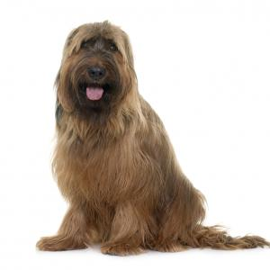

Pastor de Brie


El pastor de Brie, también conocido como Briard (llamado en inglés),
es un perro muy llamativo por su largo y hermoso pelaje.
También destaca por su temperamento protector y leal.
Es por eso que fue y sigue siendo muy cotizado en su país de origen.
| Origen: |
Europa-Francia |
| Altura: |
55-77cm |
| Peso: |
25-45kg |
Ver